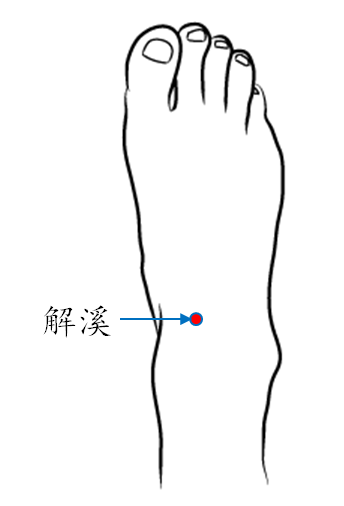

【穴位名稱】: 解溪 (ST41)

【治療症狀】: 胃、十二指腸潰瘍
【取穴位置】: 足背與小腿交界處的橫紋中央凹陷處，當{79}長伸肌腱與趾長伸肌腱之間。《靈樞·本輸》：「上衝陽一寸半陷者中也」；《太平聖惠方》：「在系鞋處」；《針灸玉龍經》：「在足腕上大筋外宛宛中」；《醫學入門》：「去內庭上六寸半」；《針灸大成》：「足大指次指直上，跗上陷者宛宛中」；《循經考穴編》：「正居{31}跗之間」；《動功按摩秘訣》：「去陷谷四寸半」。
【針刺方法】: 淺刺0.3～0.5吋。禁直接灸，艾條灸5～10分鐘。